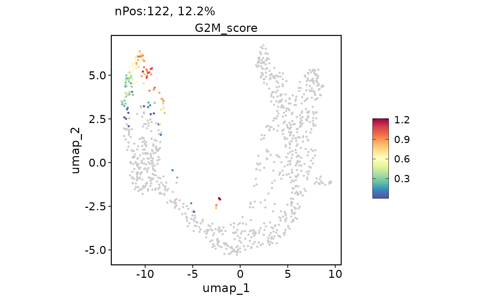
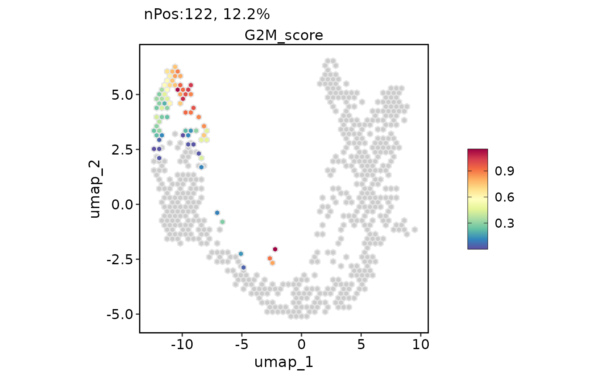
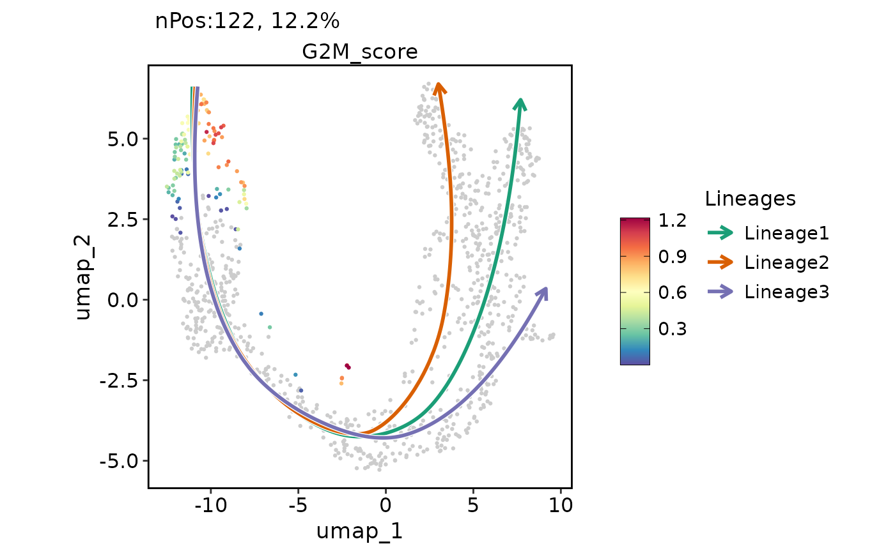
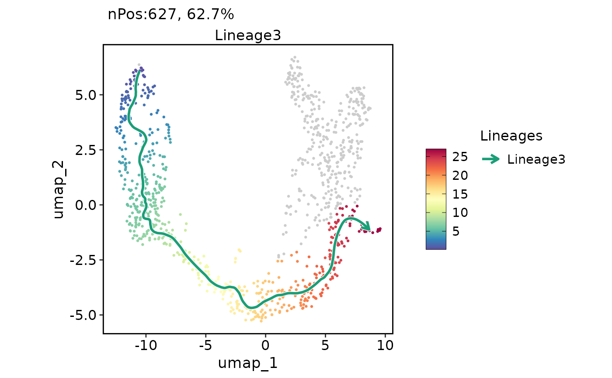
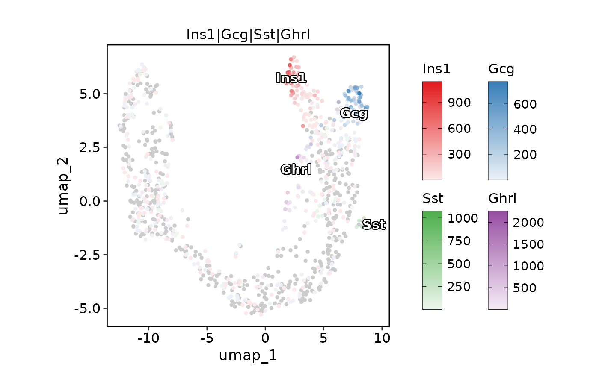
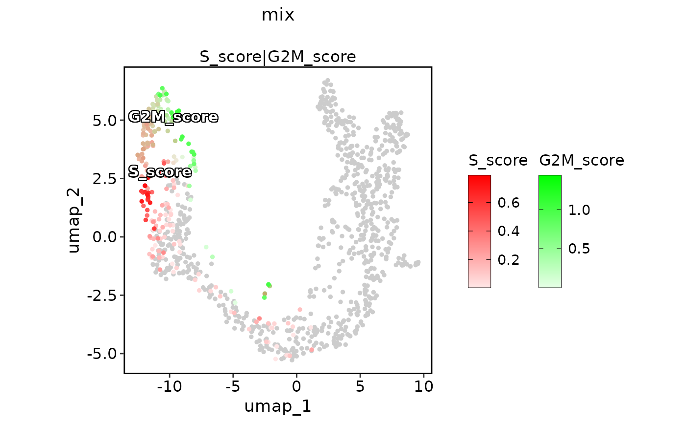
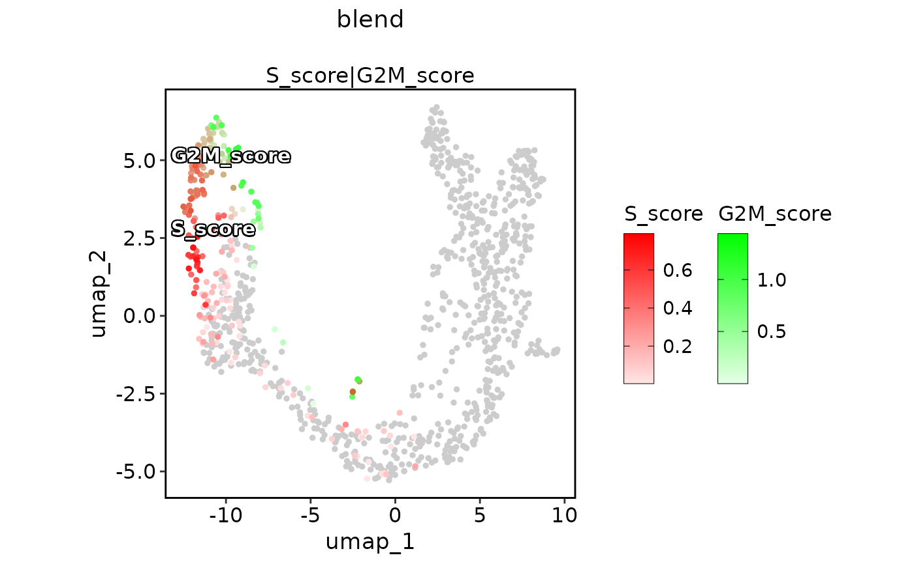
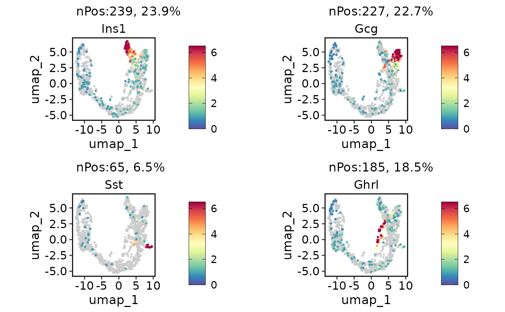
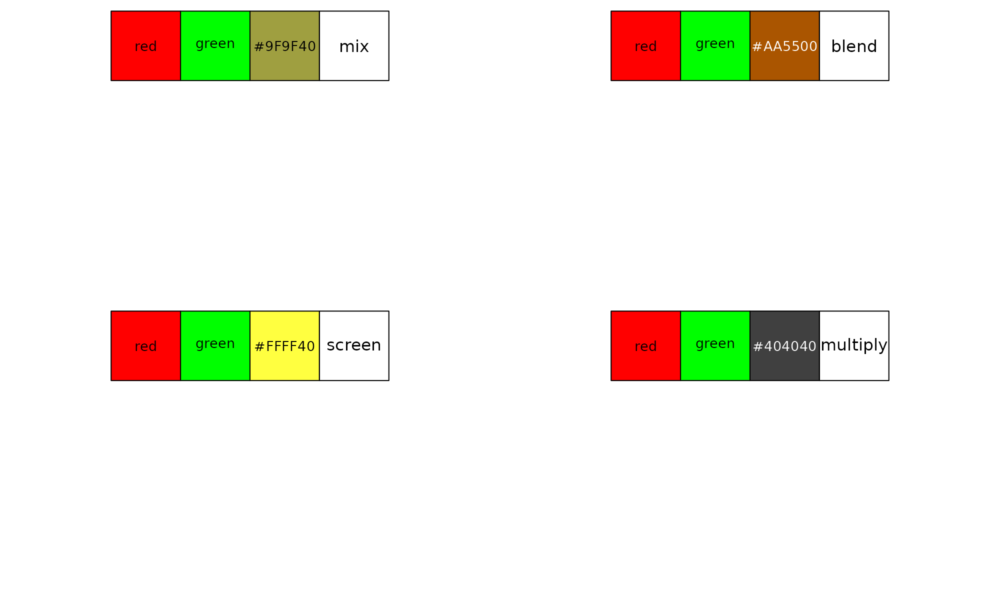

Dimensional reduction plot for expression.
ExpDimPlot.RdPlotting cell points on a reduced 2D plane and coloring according to the expression of the features.
ExpDimPlot(
srt,
features,
reduction = NULL,
dims = c(1, 2),
split.by = NULL,
slot = "data",
assay = DefaultAssay(srt),
show_stat = TRUE,
palette = ifelse(isTRUE(compare_features), "Set1", "Spectral"),
pal_color = NULL,
bg_cutoff = 0,
bg_color = "grey80",
pt.size = NULL,
pt.alpha = 1,
keep_scale = NULL,
lower_quantile = 0,
upper_quantile = 0.99,
add_density = FALSE,
density_color = "grey80",
density_filled = FALSE,
density_filled_palette = "Greys",
density_filled_color = NULL,
cells.highlight = NULL,
cols.highlight = "black",
sizes.highlight = 1,
alpha.highlight = 1,
stroke.highlight = 0.5,
calculate_coexp = FALSE,
compare_features = FALSE,
color_blend_mode = "blend",
label = FALSE,
label.size = 4,
label.fg = "white",
label.bg = "black",
label.bg.r = 0.1,
label_insitu = FALSE,
label_repel = FALSE,
label_repulsion = 20,
label_point_size = 1,
label_point_color = "black",
label_segment_color = "black",
lineages = NULL,
lineages_trim = c(0.01, 0.99),
lineages_span = 0.75,
lineages_palette = "Dark2",
lineages_pal_color = NULL,
lineages_arrow = arrow(length = unit(0.1, "inches")),
lineages_line_size = 1,
lineages_line_bg = "white",
lineages_line_bg_r = 0.5,
lineages_whiskers = FALSE,
lineages_whiskers_size = 0.5,
lineages_whiskers_alpha = 0.5,
graph = NULL,
edge_size = c(0.05, 0.5),
edge_alpha = 0.1,
edge_color = "grey40",
hex = FALSE,
hex.size = 0.5,
hex.color = "grey90",
hex.bins = 50,
hex.binwidth = NULL,
raster = NULL,
raster.dpi = c(512, 512),
theme_use = "theme_scp",
aspect.ratio = 1,
title = NULL,
subtitle = NULL,
xlab = NULL,
ylab = NULL,
lab_cex = 1,
xlen_npc = 0.15,
ylen_npc = 0.15,
legend.position = "right",
legend.direction = "vertical",
combine = TRUE,
nrow = NULL,
ncol = NULL,
byrow = TRUE,
align = "hv",
axis = "lr",
force = FALSE
)Arguments
- srt
A Seurat object.
- features
Name of one or more metadata columns to group (color) cells by (for example, orig.ident).
- reduction
Which dimensionality reduction to use.
- split.by
Name of a metadata column to split plot by.
- palette
Name of palette to use. Default is "Paired".
- bg_color
Color value for NA points.
- pt.size
Point size for plotting.
- pt.alpha
Point transparency.
- keep_scale
How to handle the color scale across multiple plots. Options are:
"feature" (default; by row/feature scaling): The plots for each individual feature are scaled to the maximum expression of the feature across the conditions provided to 'split.by'.
"all" (universal scaling): The plots for all features and conditions are scaled to the maximum expression value for the feature with the highest overall expression.
NULL (no scaling): Each individual plot is scaled to the maximum expression value of the feature in the condition provided to 'split.by'. Be aware setting NULL will result in color scales that are not comparable between plots.
- cells.highlight
A vector of names of cells to highlight.
- cols.highlight
A vector of colors to highlight the cells.
- sizes.highlight
Size of highlighted cells.
- legend.position
The position of legends ("none", "left", "right", "bottom", "top", or two-element numeric vector)
- legend.direction
Layout of items in legends ("horizontal" or "vertical")
- combine
Whether to arrange multiple plots into a grid.
- nrow
Number of rows in the plot grid.
- ncol
Number of columns in the plot grid.
- byrow
Logical value indicating if the plots should be arrange by row (default) or by column.
- force
Value
A single ggplot object if combine = TRUE; otherwise, a list of ggplot objects
Examples
data("pancreas1k")
ExpDimPlot(pancreas1k, features = "G2M_score", reduction = "UMAP")

ExpDimPlot(pancreas1k, features = "G2M_score", reduction = "UMAP", hex = TRUE)
#> Warning: Removed 4 rows containing missing values (geom_hex).
#> Warning: Removed 1 rows containing missing values (geom_hex).
#> Warning: Removed 4 rows containing missing values (geom_hex).
#> Warning: Removed 1 rows containing missing values (geom_hex).

pancreas1k <- RunSlingshot(pancreas1k, group.by = "SubCellType", reduction = "UMAP")
#> Warning: Removed 8 row(s) containing missing values (geom_path).
#> Warning: Removed 8 row(s) containing missing values (geom_path).
 ExpDimPlot(pancreas1k, features = "G2M_score", reduction = "UMAP", lineages = paste0("Lineage", 1:3))
#> Warning: Removed 8 row(s) containing missing values (geom_path).
#> Warning: Removed 8 row(s) containing missing values (geom_path).
ExpDimPlot(pancreas1k, features = "G2M_score", reduction = "UMAP", lineages = paste0("Lineage", 1:3))
#> Warning: Removed 8 row(s) containing missing values (geom_path).
#> Warning: Removed 8 row(s) containing missing values (geom_path).

ExpDimPlot(pancreas1k,
features = c("Ghrl", "Ins1", "Gcg", "Ins2"), pt.size = 1,
compare_features = TRUE, color_blend_mode = "blend",
label = TRUE, label_insitu = TRUE
)

ExpDimPlot(pancreas1k,
features = c("Ghrl", "Ins1", "Gcg", "Ins2"), pt.size = 1,
compare_features = TRUE, color_blend_mode = "blend",
label = TRUE, label_insitu = TRUE, label_repel = TRUE
)

ExpDimPlot(pancreas1k,
features = c("S_score", "G2M_score"), pt.size = 1, pal_color = c("red", "green"),
compare_features = TRUE, color_blend_mode = "mix", title = "mix",
label = TRUE, label_insitu = TRUE
)

ExpDimPlot(pancreas1k,
features = c("S_score", "G2M_score"), pt.size = 1, pal_color = c("red", "green"),
compare_features = TRUE, color_blend_mode = "blend", title = "blend",
label = TRUE, label_insitu = TRUE
)
 ExpDimPlot(pancreas1k,
features = c("S_score", "G2M_score"), pt.size = 1, pal_color = c("red", "green"),
compare_features = TRUE, color_blend_mode = "screen", title = "screen",
label = TRUE, label_insitu = TRUE
)
ExpDimPlot(pancreas1k,
features = c("S_score", "G2M_score"), pt.size = 1, pal_color = c("red", "green"),
compare_features = TRUE, color_blend_mode = "screen", title = "screen",
label = TRUE, label_insitu = TRUE
)

ExpDimPlot(pancreas1k,
features = c("S_score", "G2M_score"), pt.size = 1, pal_color = c("red", "green"),
compare_features = TRUE, color_blend_mode = "multiply", title = "multiply",
label = TRUE, label_insitu = TRUE
)

library(scales)
par(mfrow = c(2, 2))
show_col(c("red", "green", blendcolors(c("red", "green"), mode = "mix")), ncol = 4)
text(3.5, -0.5, "mix", cex = 1.2)
show_col(c("red", "green", blendcolors(c("red", "green"), mode = "blend")), ncol = 4)
text(3.5, -0.5, "blend", cex = 1.2)
show_col(c("red", "green", blendcolors(c("red", "green"), mode = "screen")), ncol = 4)
text(3.5, -0.5, "screen", cex = 1.2)
show_col(c("red", "green", blendcolors(c("red", "green"), mode = "multiply")), ncol = 4)
text(3.5, -0.5, "multiply", cex = 1.2)
